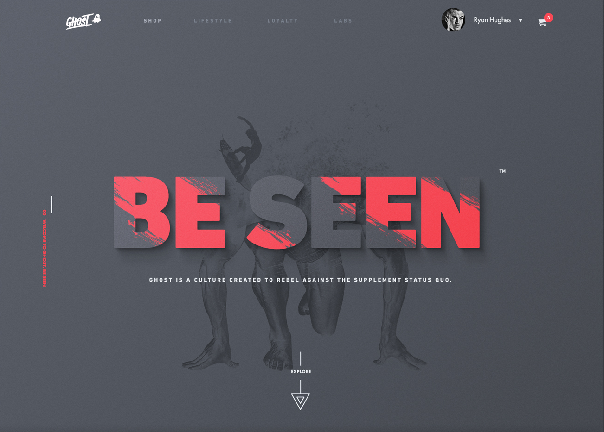
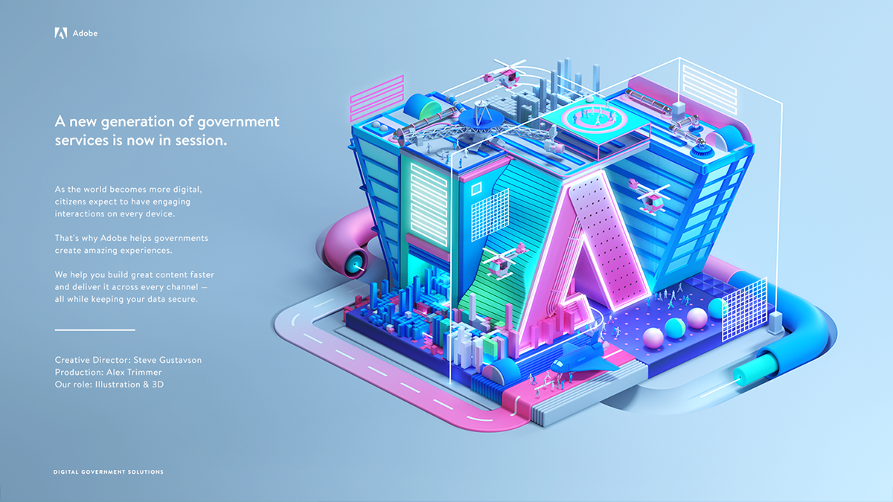

Веб дизайн - одна из самых привлекательных отраслей в креативных
индустриях. Сейчас многие стремятся туда попасть видя
перспективность и востребованность. В этом лонгриде мы расскажем
вам про особенности направления, познакомим со студентом АГУ,
который уже смог зарекомендовать себя в этой сфере и дадим
несколько советов и прогнозов по развитию своих навыков
Введение: что это такое и с чем это едят?
Веб-дизайн - это наука, которая объединяет эстетику,
функциональность и понимание пользовательского опыта для создания
веб-сайтов, которые эффективно работают и привлекательны для
потребителей.Но по своей сути, это скорее процесс создания и
оформления веб-страницы, включающий в себя выбор структуры,
шрифтов, цветовых схем, графики и других визуальных
элементов.Главной задачей веб-дизайнера является создание
эффективного и удобного интерфейса для веб-сайта или приложения,
который будет привлекать пользователей и обеспечивать им легкий
доступ к информации или услугам. Он должен не только учитывать
визуальное оформление, но и удобство навигации, быстродействие и
адаптивность для различных устройств и браузеров
Кому подойдет профессия?
-Людям, которым нравится рисовать и при этом испытывающим интерес
к технологиям.
-Кто хочет работать в ИТ-сфере, но не заниматься программированием
или версткой.
-Испытывающим искренний интерес ко всему новому.
-Способным к самообучению.
-Готовым к постоянным изменениям, развитию.
-Внимательным, усидчивым.
Веб-дизайн - как процесс включает в себя несколько этапов:
На первом этапе необходимо определить цели и требования клиента,
а также выявить потребности аудитории, для которой создается
сайт. Это позволяет сформировать необходимые функции и дизайн
сайта.
На основе требований заказчика веб-дизайнер разрабатывает
структуру сайта - это определение основных разделов, страниц,
которые будут присутствовать на сайте, а также описание их
содержания.
После определения структуры сайта веб-дизайнер создает
компьютерные макеты, которые являются концептуальными чертежами
сайта. Как правило, разрабатывается несколько макетов, каждый из
которых предлагает свой вариант оформления сайта.
После того, как макеты подготовлены, они представляются клиенту
для оценки. Если это необходимо, они дорабатываются до тех пор,
пока клиент не утвердит окончательный вариант макета.
На основе утвержденного клиентом макета веб-дизайнер начинает
разработку дизайна сайта. Этот этап включает в себя работу с
цветом, шрифтами, изображениями, графикой и другими элементами
дизайна.
После утверждения дизайна веб-дизайнер разрабатывает код HTML и
CSS, который используется для создания веб-страниц сайта.
По завершении разработки сайта его необходимо протестировать,
чтобы убедиться, что он работает правильно и быстро.
Веб-дизайнер проводит тестирование на разных устройствах и
платформах, а также оптимизирует сайт для лучшей
производительности и оптимального показа на разных устройствах.
После того, как сайт запущен, веб-дизайнер может продолжать
работать над различными элементами сайта, обновлять контент и
поддерживать его работоспособность.
Статистика
Востребованность веб-дизайнеров в России высока, особенно с учетом
быстрого роста интернет-бизнеса и цифровой экономики в стране.
Веб-дизайнеры занимаются созданием интерфейсов для веб-сайтов,
веб-приложений, онлайн-магазинов и других проектов в интернете.
Кроме того, веб-дизайнеры участвуют в разработке и
концептуализации сайтов, определяют структуру и функциональность,
а также помогают оптимизировать веб-сайты для поисковых систем.
94% успешности сайта связаны с веб-дизайном (Research Gate) Одной
из наиболее распространенных причин, по которой компании
обращаются к веб-дизайну, является создание привлекательного сайта
или логотипа. Около 94% людей говорят, что их первые впечатления о
компании связаны с визуалом. Это исследование также основывается
на выводах таких компаний, как LevelEleven, которые утверждают,
что 94% людей считают веб-дизайн основной причиной, по которой они
не доверяют веб-сайту.
Заработок специалиста в веб-дизайне определяется формой занятости
- фриланс или штат, количеством задач и уровнем профессионализма.
В среднем, веб-дизайнер с опытом от года и классным портфолио
может претендовать на ЗП от 50.000 рублей по данным вакансий HH.ru
Внештатные графические дизайнеры составляют около 90% отрасли
Отчет IBISWorld об индустрии графических дизайнеров показывает,
что спрос на онлайн-дизайн, как ожидается, резко возрастет,
особенно среди фрилансеров. В настоящее время на внештатных
графических дизайнеров приходится около 90% участников отрасли.
Число сотрудников, работающих внештатно в сфере графического
дизайна, вероятно, увеличится после пандемии.
Тренды веб-дизайна: какие стили и элементы дизайна популярны в
настоящее время
Градиенты: плавные переходы между двумя или более цветами,
которые создают глубину и акцентируют внимание на элементах.
Анимация: динамические, интерактивные элементы, которые приятны
для глаза и привлекают внимание.
Скругленные углы: замена углов на более плавные формы, что
придает мягкости и комфорта в визуальном восприятии.
Тень и объем: использование теней и объемов для создания глубины
и ощущения присутствия.

Большие и жирные шрифты: использование крупных и ярких шрифтов
для привлечения внимания к заголовкам и текстам.
Темный режим: использование темной цветовой гаммы, когда
страница переключается на темный фон с белыми или яркими
элементами.

3D-эффекты: использование трехмерных объектов и эффектов,
которые придают ощущение реальности и глубины.
Интерактивность: размещение элементов на странице таким образом,
чтобы они реагировали на действия пользователя, например, при
наведении на них курсора мыши.
Кастомные иллюстрации: использование уникальных иллюстраций и
графических элементов, созданных специально для проекта, для
придания уникального стиля и характера.
Примеры выдающихся веб-дизайнерских работ:
Explore the Moon от 108 Studio
Московская студия создала сайт для Музея лунных исследований.
Неординарный проект, выдержанный в черно-белых тонах, набрал более
92 тысяч просмотров, 10 тысяч лайков и более 500 комментариев.
Проект очень круто продуман от графической составляющей и его
тональности до интерфейса. Получилась выверенная гармония, где
user experience учтен до мелочей, а графика идеально дополняет. Ну
а сам стиль исполнения — выше всяких похвал. Explore The Moon
делали с помощью продуктов Adobe: Photoshop, Illustrator и After
Effects, а также с помощью Maxon Cinema 4D.
AR Virtual Fitness coach App от Daz Qu
Китайский дизайнер придумал новое приложение для тренировок.
Красивое, легкое, удобное для любого пользователя с кучей функций
и потрясающей графикой. Проект набрал на Behance 64 тысячи
просмотров, 7300 лайков и более 300 комментариев. Концепт
предлагает дополненную реальность, помогающую взаимодействовать
пользователю с ней с точки зрения физической нагрузки. Предлагает
тренировки, учитывает состояние организма, рассчитывает
оптимальную нагрузку. При этом есть великолепная по графической и
практической составляющей статистика, а кроме того — пользователь
в очередной раз поставлен во главу угла. Учтены даже моменты как
удобно пользоваться смартфоном: горизонтально или вертикально.
Вопросы-ответы: Мы пригласили и задали пару вопросов студенту АГУ,
который уже зарекомендовал себя как веб-дизайнера
Олег Морозов
Студент 2 курса АГУ
- Расскажите о себе
Меня зовут Олег Морозов, я студент 2 курса рекламы и связи с
общественностью, также по совместительству являюсь начинающим
графическим дизайнером, в частности занимаюсь веб-дизайном.
- Расскажите о веб-дизайне
Ну, по моему мнению, веб-дизайн – это все креативные и
творческие проявления в графическом дизайне, которые направлены
на проектирование и разработку веб-интерфейса для сайтов или же
приложений.
- Как долго вы уже занимаетесь веб-дизайном и каким образом
начали?
Вообще, на это подтолкнул меня мой старший брат (он также
является веб-дизайнером), он спросил меня, буду ли я заниматься
этим и вообще интересна эта стезя мне, и я согласился – так всё
это и началось. Примерно 7 месяцев назад он взял меня в ученики
и начал обучать основам дизайна. Я проходил специальный курс для
этого, смотрел обучающие видео, делал «домашние задания»,
которые он проверял – постепенно нарабатывал руку.
- Что вы можете сказать о развитии данной сферы в нашем вузе?
Многого не могу сказать, но был приятно удивлен, когда на одном
из учебных предметов нас обучали базовым навыкам графического
дизайна и работе в специальных для этого площадках. Надеюсь, что
в будущем такое обучение будет модернизироваться и обновляться.
- С какими сложностями ты сталкиваешься в своей профессии?
Самым сложным для меня является начальный этап работы, а именно,
так скажем, когда идут поиски вдохновения. В этом моменте у тебя
еще нету четкой концепции того, что ты будешь делать и методом
проб ты пытаешься найти, зацепиться за идею своего будущего
проекта.
- Какая сторона твоей деятельности тебе нравится больше всего?
Как бы банально это не было, но именно тот момент, когда ты
прошел этап планирования и приступил к работе с уже четким
планом действий, является для меня самым любимым.
- Какими факторами руководствуетесь при создании концептов новых
веб-проектов?
Самый важный фактор на этом этапе – это наличие исходников,
которые тебе предоставляет заказчик, brand book другими словам.
Это намного упрощает и ускоряет процесс создания сайта, так как
тебе не нужно искать шрифты, цвета, какие-нибудь отдельные
элементы и так далее…
- Какие основные принципы дизайна вам близки?
В своих работах я стараюсь следовать всем принципам
дизайна,(если это возможно, конечно) так как при соблюдении оных
получаются действительно качественные и достойные работы,
которые не стыдно в итоге отдавать заказчику.
- Как вы учитесь новым технологиям и тенденциям в веб-дизайне?
Из-за того, что в мою повседневную жизнь вошел «YouTube», я
начал смотреть видео на эту тему именно там, потому что это
очень удобно, а иногда некоторые ютуберы проводят прямые
трансляции, когда работают, и ты вживую можешь пообщаться с ними
и спросить то, что тебя интересует в данный момент. Вам же,
дорогие читатели, я уверенно могу посоветовать этот
видеохостинг, тем более, в наше время полным-полно самых разных
видео на эту тему. Ну, а если же выбирать человека, которого я
сам смотрю, то это канал Макса Куратова – понятно объясняет и
красиво делает.
- Как вы реагируете на критику со стороны заказчика или коллег
по проекту? Как вы обращаетесь с комментариями и предложениями
по улучшению вашей работы?
На критику я реагирую спокойно и принимаю ее, так как иногда со
стороны можно получить действительно годные советы, которые
могут улучшить твою работу, сам лично это проверял.
Словарик веб дизайна
1. Веб-дизайн - процесс создания дизайна для веб-сайтов.
2. UI-дизайн - проектирование интерфейсов, удобных для
пользователя.
3. UX-дизайн - управление пользовательским опытом, создание
удобных и интуитивно понятных интерфейсов.
4. Верстка - процесс создания веб-страницы, состоящей из
HTML-кода и CSS-стилей.
5. Разработка - процесс создания сайта или его элементов, с
использованием языков программирования.
6. Backend - Часть веб-сайта, которую пользователь обычно не
видит, включающая серверную логику и базу данных
7. Frontend - Часть веб-сайта, которую видит пользователь,
включая интерфейс пользователя и клиентскую логику
8. CMS - система управления содержимым сайта, упрощающая его
создание и обслуживание.
9. Bootstrap - CSS-фреймворк, упрощающий верстку и создание
адаптивных сайтов.
10. Responsive Design - подход к веб-дизайну, когда сайт
адаптируется под различные устройства.
11. LandingPage - разновидность сайта с целью увеличения
конверсии.
12. UI Kit - набор готовых элементов для создания интерфейса
веб-сайт
13. Landing - страница сайта, на которой пользователь
"приземляется" при переходе из контекстной рекламы или других
ресурсов.